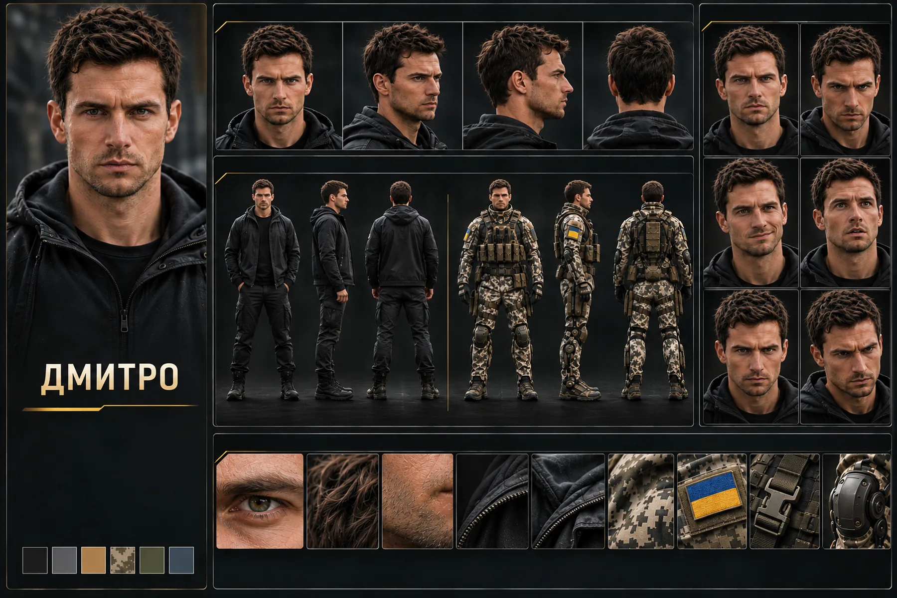

ОСНОВНА ІНФОРМАЦІЯ
ІТ-фахівець із військовим досвідом
На початку історії Дмитрові тридцять шість років. Він має гострі риси обличчя, уважний, трохи втомлений погляд і коротку щетину з першими сріблястими нитками. У повсякденному житті не вирізняється серед інших: простий охайний одяг і сумка через плече.
У 2014 році Дмитро пішов добровольцем і воював на Луганщині. Повернувшись, він неохоче говорить про пережите й повертається до роботи за комп’ютером. Його професійний світ — сервери, протоколи та захищені канали зв’язку.
Ім’я: Дмитро
Вік на початку історії: 36 років
Досвід: доброволець із 2014 року
Професійна сфера: ІТ, сервери та захищені канали
Статус: характерник після ініціації
Військовий досвід: бойові дії на Луганщині
ПОЧАТОК ІСТОРІЇ
Між звичним життям і новим світом
Перед подіями історії Дмитро працює над закритим військовим проєктом. Одного ранку, дорогою з кафе, він потрапляє під удар ворожого дрона. Після вибуху приходить до тями в темній печері й поступово розуміє, що опинився не під завалами, а в зовсім іншому місці.
Замість паніки Дмитро намагається послідовно оцінити ситуацію та знайти вихід. Його звичка аналізувати обставини й шукати практичне рішення стає важливою рисою поведінки в незнайомому середовищі.
ІНІЦІАЦІЯ ТА НАВЧАННЯ
Нові можливості тіла
Після ініціації Дмитро помічає, що рухається швидше й реагує точніше. Айріс пояснює, що його тіло перебудувалося, але застерігає: швидкість сама по собі не гарантує перемоги. Щоб зрозуміти межі нових можливостей, Дмитро проходить практичні тренування — спершу перевіряє координацію та реакцію в настільному тенісі, потім працює над витривалістю й бігом.
Пізніше він використовує бойову підготовку, шаблю та бойовий екзоскелет. У сутичках Дмитро не покладається лише на силу: змінює кут атаки, шукає слабкі місця противника й пристосовується до його тактики.
ХАРАКТЕР І ПОВЕДІНКА
Спостережливість і самоконтроль
Дмитро уважний до деталей і звик діяти без зайвої метушні. Навіть під час повітряної тривоги він оцінює відстань до укриття та рухається швидко, але без паніки. Водночас він не вважає себе героєм і не схильний перебільшувати власні вміння.
Його попередній військовий досвід і технічне мислення доповнюють одне одного: він уміє працювати з інформацією, аналізувати ситуацію та зберігати зосередженість, коли обставини стають небезпечними.